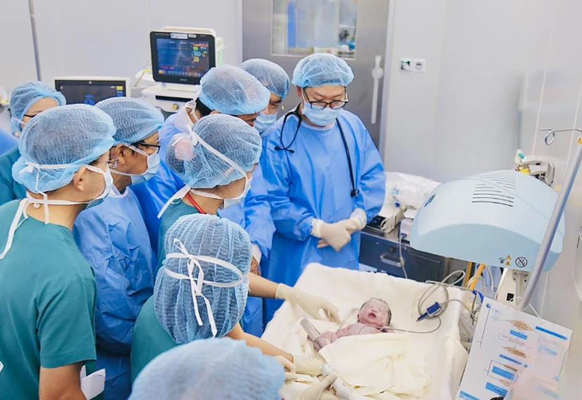

Đăng ngày: 23/05/2025
Bệnh viện Từ Dũ (TP.HCM) vừa được chứng nhận là trung tâm can thiệp bào thai chuẩn châu Âu đầu tiên tại Việt Nam, do Trường Quốc tế Y học chu sinh, sơ sinh và sức khỏe sinh sản châu Âu - PREIS (Ý) công nhận.
Trong phiên khai mạc Hội nghị sản phụ khoa Việt - Pháp - châu Á - Thái Bình Dương 2025 ngày 8-5, Bệnh viện Từ Dũ (TP.HCM) đón nhận chứng nhận trở thành trung tâm can thiệp bào thai chuẩn châu Âu đầu tiên tại Việt Nam, do Trường Quốc tế Y học chu sinh, sơ sinh và sức khỏe sinh sản châu Âu - PREIS (Ý) công nhận.
Chỉ trong năm 2024, các bác sĩ tại Bệnh viện Từ Dũ phối hợp cùng bác sĩ Bệnh viện Nhi đồng 1 đã can thiệp thành công 5 trường hợp thông tim ngay từ trong bào thai, mở ra cánh cửa sống cho những bé bị dị tật tim bẩm sinh.
Thông tim can thiệp bào thai là một lĩnh vực y tế chuyên sâu trong sản phụ khoa mà hiện nay có rất ít trung tâm trên thế giới có thể thực hiện được. Phẫu thuật thông tim can thiệp bào thai thành công mang lại cơ hội cứu sống sau cùng cho các em bé không may mắc bệnh tim bẩm sinh nặng.
Tại hội nghị, Bộ Y tế cũng đã thẩm định 5 kỹ thuật can thiệp bào thai mới nhất, ghi nhận bước tiến lớn trong lĩnh vực y học bào thai tại nước ta. Phát biểu tại hội nghị, BS Trần Ngọc Hải - giám đốc Bệnh viện Từ Dũ (TP.HCM) - cho biết tiếp bước chặng đường 24 năm, Bệnh viện Từ Dũ tổ chức Hội nghị sản phụ khoa Việt - Pháp - châu Á - Thái Bình Dương lần thứ 25.
Hội nghị thu hút sự quan tâm sâu rộng từ cộng đồng y khoa với hơn 3.000 đại biểu đăng ký tham dự đến từ các bệnh viện, cơ sở y tế, trường đại học trên toàn quốc.
Ông Hà Anh Đức - cục trưởng Cục Quản lý khám chữa bệnh Bộ Y tế - cho rằng hội nghị không đơn thuần là sự kiện khoa học mà là cầu nối giữa các quốc gia trong lĩnh vực chăm sóc sức khỏe bà mẹ và trẻ em.
Lĩnh vực sản phụ khoa đã bước vào kỷ nguyên đột phá, sáng tạo. Tuy nhiên vẫn đối mặt một số thách thức như tỉ lệ tử vong ở bà mẹ và trẻ em ở vùng sâu, vùng xa, gia đình có thu nhập thấp... vẫn còn cao vì còn hạn chế trong việc tiếp cận dịch vụ y tế.
"Để cải thiện điều này chúng ta không chỉ chia sẻ về phác đồ điều trị mà cả kiến thức khoa học, nhằm bảo đảm việc chăm sóc sức khỏe phù hợp với điều kiện kinh tế nhưng không có phụ nữ nào bị bỏ lại phía sau", ông Đức nhấn mạnh.
Tác giả: Vũ Trúc Lam